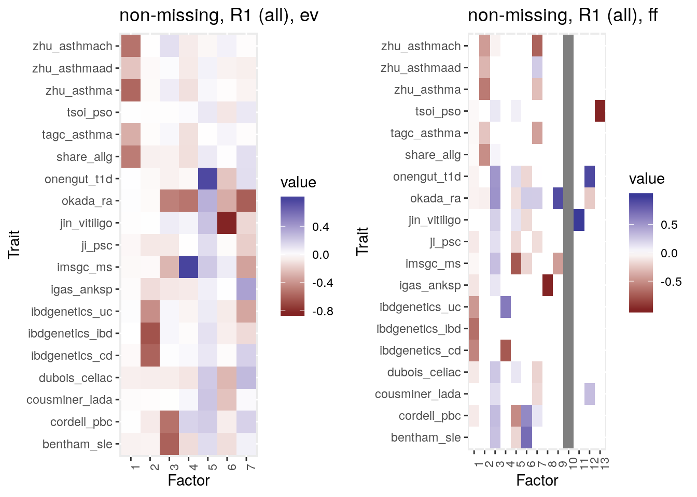
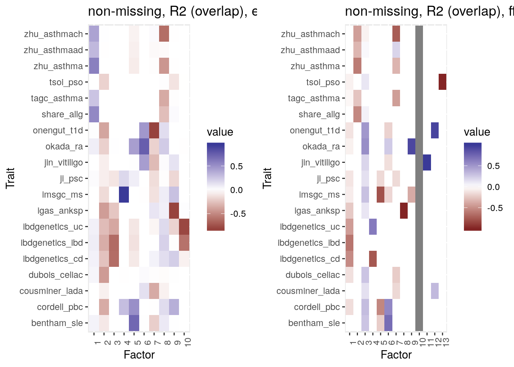
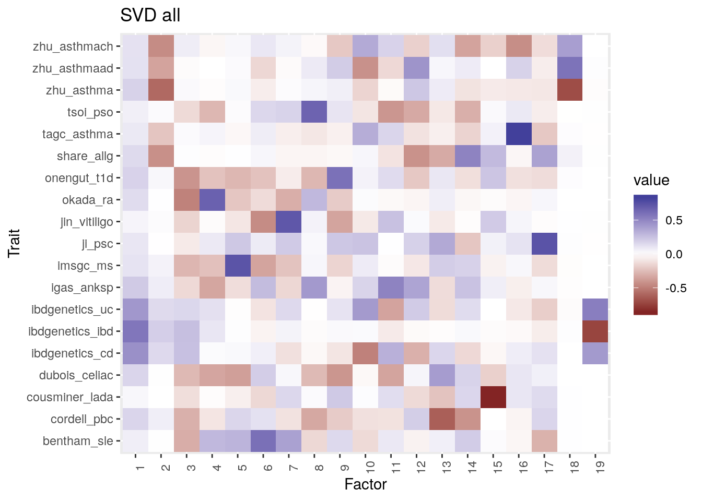
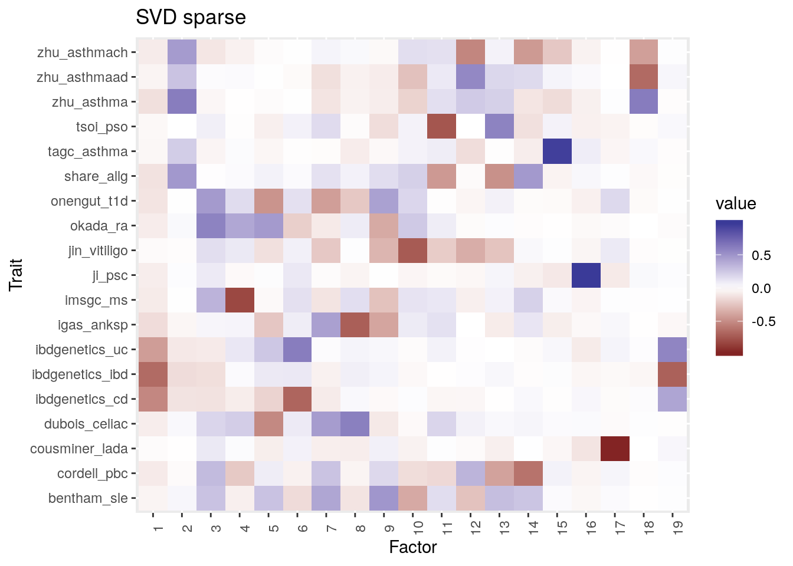

Immune Mediated Diseases
Jean Morrison
2020-06-18
Last updated: 2020-06-18
Checks: 7 0
Knit directory: sumstatFactors/
This reproducible R Markdown analysis was created with workflowr (version 1.4.0.9000). The Checks tab describes the reproducibility checks that were applied when the results were created. The Past versions tab lists the development history.
Great! Since the R Markdown file has been committed to the Git repository, you know the exact version of the code that produced these results.
Great job! The global environment was empty. Objects defined in the global environment can affect the analysis in your R Markdown file in unknown ways. For reproduciblity it’s best to always run the code in an empty environment.
The command set.seed(20190819) was run prior to running the code in the R Markdown file. Setting a seed ensures that any results that rely on randomness, e.g. subsampling or permutations, are reproducible.
Great job! Recording the operating system, R version, and package versions is critical for reproducibility.
Nice! There were no cached chunks for this analysis, so you can be confident that you successfully produced the results during this run.
Great job! Using relative paths to the files within your workflowr project makes it easier to run your code on other machines.
Great! You are using Git for version control. Tracking code development and connecting the code version to the results is critical for reproducibility. The version displayed above was the version of the Git repository at the time these results were generated.
Note that you need to be careful to ensure that all relevant files for the analysis have been committed to Git prior to generating the results (you can use wflow_publish or wflow_git_commit). workflowr only checks the R Markdown file, but you know if there are other scripts or data files that it depends on. Below is the status of the Git repository when the results were generated:
Ignored files:
Ignored: .Rhistory
Ignored: .Rproj.user/
Ignored: analysis/fixed_factors2_cache/
Ignored: analysis/fixed_factors_cache/
Ignored: analysis/metabo_flash_experiments_cache/
Ignored: analysis/pathway_factors_cache/
Ignored: analysis/simulations_cache/
Ignored: analysis/z_scores_cache/
Ignored: analysis_data/2020-06-10_ai/
Untracked files:
Untracked: R/est_R_pairwise.R
Untracked: analysis/2020-04-28-meeting_notes.Rmd
Untracked: analysis/literature.Rmd
Untracked: analysis/sample_corr2.Rmd
Untracked: analysis/sumstat_factors.bib
Untracked: buttons.css
Untracked: code/flashier_compare.R
Untracked: code/flashier_compare_jason.R
Untracked: code/hide_output.js
Untracked: code/mask_flashier.R
Untracked: code/mask_flashr.R
Untracked: covariance_scratch.R
Untracked: docs/figure/ld_etc.Rmd/
Untracked: docs/figure/sample_corr2.Rmd/
Untracked: for_jason/
Untracked: k99_analysis.R
Untracked: k99_fit.RDS
Untracked: man/sim_sumstats_lf.Rd
Untracked: simulate_1.rds
Untracked: simulate_2.rds
Unstaged changes:
Modified: man/mask_and_fit.Rd
Modified: man/sumstatFactors.Rd
Note that any generated files, e.g. HTML, png, CSS, etc., are not included in this status report because it is ok for generated content to have uncommitted changes.
These are the previous versions of the R Markdown and HTML files. If you’ve configured a remote Git repository (see ?wflow_git_remote), click on the hyperlinks in the table below to view them.
| File | Version | Author | Date | Message |
|---|---|---|---|---|
| Rmd | 1972eb0 | Jean Morrison | 2020-06-19 | wflow_publish(“analysis/imd.Rmd”) |
| html | bca6b19 | Jean Morrison | 2020-06-19 | Build site. |
| Rmd | 60fd564 | Jean Morrison | 2020-06-19 | wflow_publish(“analysis/imd.Rmd”) |
Introduction
This is an exploration of an analysis of a set of immune mediated diseases exploring some analysis choices.
| Disease | Abbrv | Cases | Controls | SNPS |
|---|---|---|---|---|
| Lupus | SLE | 7219 | 15991 | 6,762,880 |
| Rheumatoid Arthritis | RA | 29880 | 73758 | 8,240,308 |
| Chrons Disease | CD | 22575 | 46693 | 9,458,484 |
| Inflammatory Bowel Disease | IBD | 42950 | 53536 | 9,934,092 |
| Ulcerative Colitis | UC | 20417 | 52230 | 9,554,059 |
| Asthma | Asth | 23948 | 118538 | 2,001,281 |
| Primary Schlerosing Cholangitis | PSC | 4796 | 19955 | 6,805,391 |
| Allergy | Allg | 180129 | 180709 | 7,112,974 |
| Ankylosing Spondilitis | Anksp | 10619 | 15145 | 103,085 |
| Celiac | Cel | 4533 | 10750 | 521,934 |
| Multiple Sclerosis | MS | 14498 | 24091 | 136,408 |
| Psoriasis | PSO | 10588 | 22806 | 141,528 |
| Primary Biliary Cirrhosis | PBC | 2764 | 10475 | 1,047,436 |
| hildhood Ashtma | Ch. Asth (Ukb) | 9676 | 347481 | 7,038,206 |
| Ashtma (both) | Asth (Ukb) | 46802 | 347481 | 7,038,206 |
| Adult onset asthma | Ad. Asth (Ukb) | 22296 | 347481 | 7,038,206 |
| Latend autoimmune diabetes | LADA | 2634 | 5947 | 4,293,816 |
| Vitiligo | Vit | 2853 | 37405 | 7,490,324 |
| Type 1 Diabetes | T1D | 6683 | 12173 | 107,814 |
There are a few challenges with these data. The fist is that some but not all studies have overlapping samples. UC, CD, and IBD are all measured in the same samples as are three of the asthma phenotypes (the three marked as (Ukb) above). A second challenge is that some the othe studies, Anksp, MS, PSO, and T1D only have published summary statistics for immunochip SNPs which is a much smaller set than the usual genome-wide study. In all analyes variants are pruned for LD
Non-missing variants, various sample overlap corrections
The first set of analyses uses only variants that are non-missing in all studies and uses several methods to correct for sample overlap. we consider three estimates of \(R\), the residual correlation in rows of \(E\).
- Identity (no sample overlap)
- \(R\) estimated with all SNPs in all studies (assumes possible sample overlap between any pair of studies) (“all”).
- Correlation estimated only between studies with known overlapping samples (“overlap”).
We consider two methods of correcting for sample overlap, the eigenvector transformation and fixed factors. In this case, since studies are mostly non-overlapping this analysis tells us how much power/accuracy we lose if we correct for sample overlap when it is not present. For comparison we will also look at the SVD of all variants.
Warning: replacing previous import 'intervals::reduce' by 'purrr::reduce'
when loading 'sumstatFactors'
Attaching package: 'dplyr'The following objects are masked from 'package:stats':
filter, lagThe following objects are masked from 'package:base':
intersect, setdiff, setequal, union
Attaching package: 'gridExtra'The following object is masked from 'package:dplyr':
combineWithout correcting for sample overlap: 
| Version | Author | Date |
|---|---|---|
| bca6b19 | Jean Morrison | 2020-06-19 |
A few interesting patterns: factors 1 and 2 capture IBD/UC/CD and ashthma/allergy clusters respectively. These are probably the strongest patterns in these data. Factor 5 captures differences between UC and CD plus some overlap of UC and PSC and RA which can be concommitant. Factor 6 is unique to childhood (not adult onset) asthma and is also shared with PBC, SLE, and RA.
Correcting for sample overlap across all studies: 
| Version | Author | Date |
|---|---|---|
| bca6b19 | Jean Morrison | 2020-06-19 |
Results using the eigenvector transformation are “muddy” while the fixed factor estimator is more sparse and has similar patterns to the using \(R=I\). Factor 12 captures sharing between T1D and LADA which we would expect to see.
Correcting for sample overlap in only some studies: 
| Version | Author | Date |
|---|---|---|
| bca6b19 | Jean Morrison | 2020-06-19 |
Here are two SVD decompositions. In the first we just take the SVD of the entire matrix of \(z\)-scores. In the second, \(z\)-scores corresponding to \(p\)-values greater than 0.05 are set to zero. These are extremely similar. 
| Version | Author | Date |
|---|---|---|
| bca6b19 | Jean Morrison | 2020-06-19 |

| Version | Author | Date |
|---|---|---|
| bca6b19 | Jean Morrison | 2020-06-19 |
Variants present in at least two studies
If we allow missing data we can use many more variants. This analysis has 168,142 variants rather than 3,991. We can no longer use the eigenvector transformation. Both with and without correction, these fits are “less neat” than the non-missing data fits. This may because the imuno chip traits have very high (90%) missingness. To explore further, I will analyze only the non-imunochip traits.


Non-missing variants, non immunochip studies
sessionInfo()R version 3.6.3 (2020-02-29)
Platform: x86_64-pc-linux-gnu (64-bit)
Running under: Ubuntu 18.04.4 LTS
Matrix products: default
BLAS: /usr/lib/x86_64-linux-gnu/openblas/libblas.so.3
LAPACK: /usr/lib/x86_64-linux-gnu/libopenblasp-r0.2.20.so
locale:
[1] LC_CTYPE=en_US.UTF-8 LC_NUMERIC=C
[3] LC_TIME=en_US.UTF-8 LC_COLLATE=en_US.UTF-8
[5] LC_MONETARY=en_US.UTF-8 LC_MESSAGES=en_US.UTF-8
[7] LC_PAPER=en_US.UTF-8 LC_NAME=C
[9] LC_ADDRESS=C LC_TELEPHONE=C
[11] LC_MEASUREMENT=en_US.UTF-8 LC_IDENTIFICATION=C
attached base packages:
[1] stats graphics grDevices utils datasets methods base
other attached packages:
[1] gridExtra_2.3 dplyr_0.8.3
[3] ggplot2_3.2.1 sumstatFactors_0.0.0.9000
loaded via a namespace (and not attached):
[1] tidyselect_0.2.5 xfun_0.9 ashr_2.2-47
[4] purrr_0.3.3 reshape2_1.4.3 lattice_0.20-38
[7] colorspace_1.4-1 vctrs_0.2.0 htmltools_0.3.6
[10] yaml_2.2.0 rlang_0.4.2 mixsqp_0.3-43
[13] pillar_1.4.2 glue_1.3.1 withr_2.1.2
[16] DBI_1.0.0 lifecycle_0.1.0 plyr_1.8.5
[19] stringr_1.4.0 munsell_0.5.0 gtable_0.3.0
[22] workflowr_1.4.0.9000 flashier_0.2.4 evaluate_0.14
[25] labeling_0.3 knitr_1.24 invgamma_1.1
[28] irlba_2.3.3 parallel_3.6.3 Rcpp_1.0.4.6
[31] readr_1.3.1 backports_1.1.5 scales_1.1.0
[34] truncnorm_1.0-8 farver_2.0.1 fs_1.3.1
[37] RMySQL_0.10.17 hms_0.5.2 digest_0.6.23
[40] stringi_1.4.3 ebnm_0.1-24 grid_3.6.3
[43] rprojroot_1.3-2 tools_3.6.3 magrittr_1.5
[46] lazyeval_0.2.2 tibble_2.1.3 crayon_1.3.4
[49] whisker_0.4 pkgconfig_2.0.3 zeallot_0.1.0
[52] Matrix_1.2-17 SQUAREM_2020.2 assertthat_0.2.1
[55] rmarkdown_1.15 R6_2.4.1 intervals_0.15.1
[58] git2r_0.26.1 compiler_3.6.3